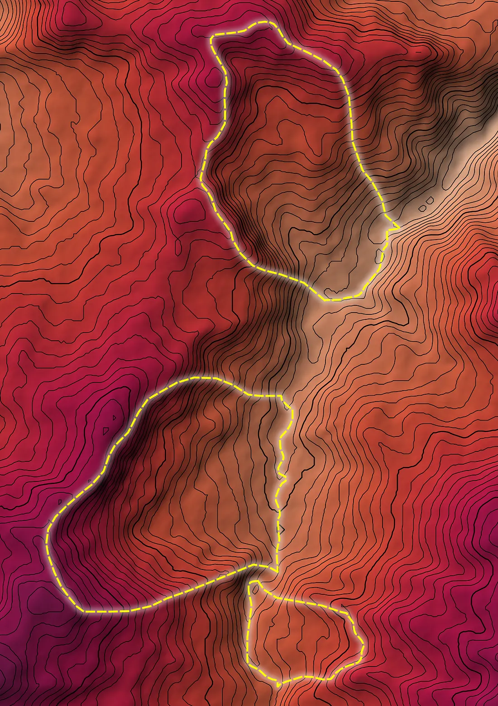
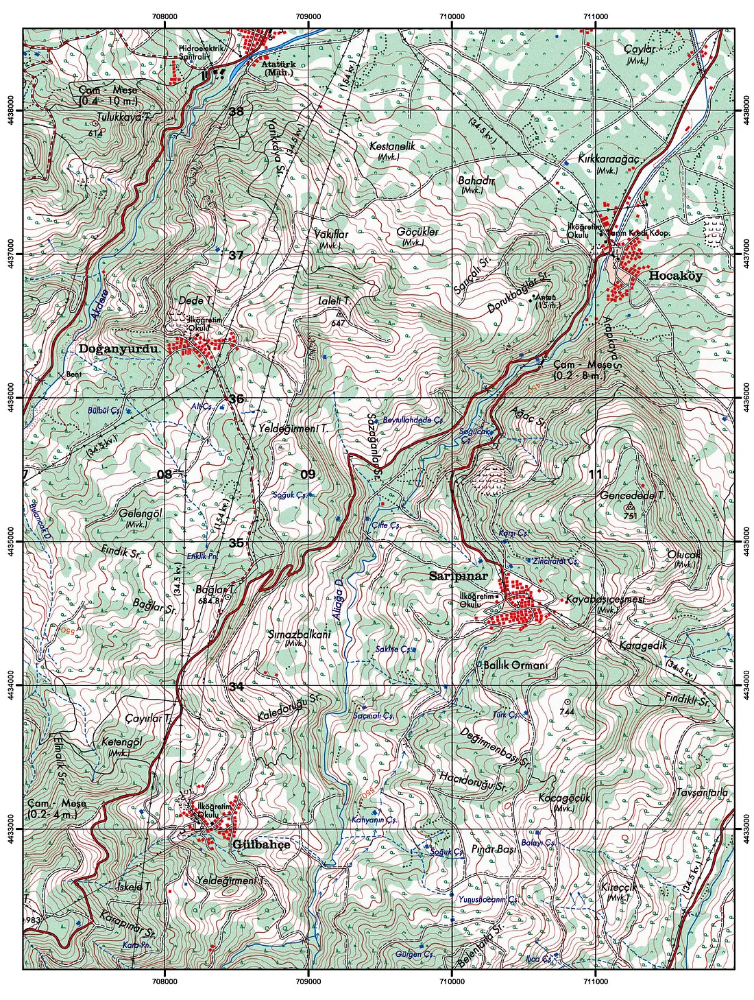
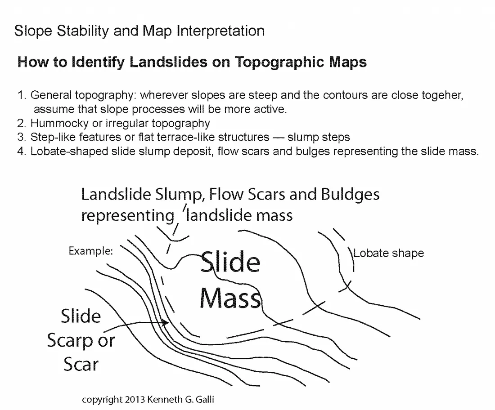
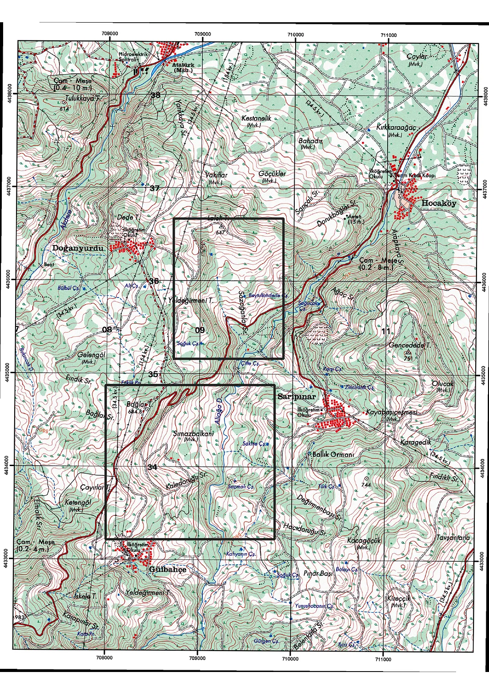
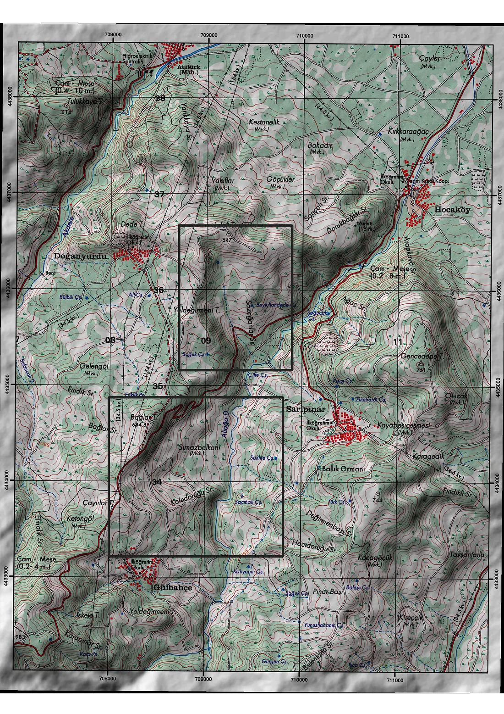
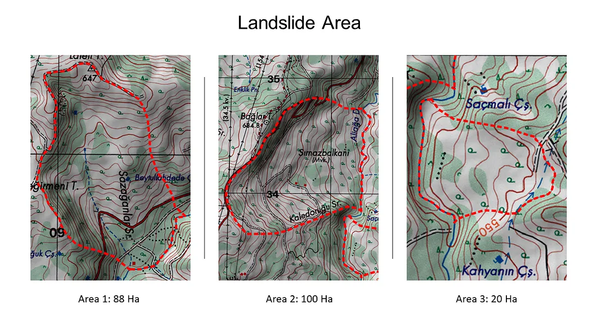
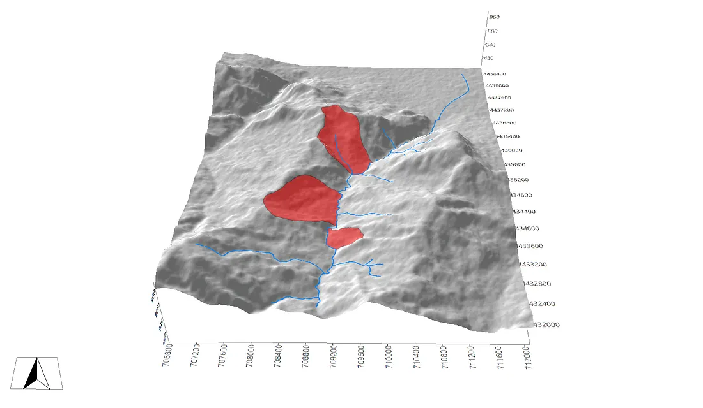
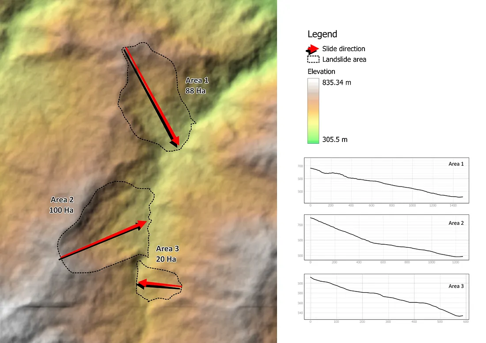

Analyzing Historical Landslide in Sarıpınar
A Contour-Based Geomorphometric Assessment of Landslide Scars

Abstract
Contour lines remain one of the most accessible instruments for the preliminary recognition of slope instability, requiring neither specialised software nor high-resolution remote-sensing products. This study applies contour-based interpretive criteria to identify and delineate historical landslide scars near Sarıpınar Village, İnegöl District, Bursa Province, Türkiye, using a topographic map cross-referenced against a Digital Elevation Model (DEM). Diagnostic contour signatures like lobate deflection, terracette-like stepping, and irregular spacing within an otherwise regular contour field are used to isolate three discrete failure zones, digitised and quantified as 88 ha, 100 ha, and 20 ha respectively. The assessment is framed within established geomorphometric and geotechnical relationships, including the contour-derived slope-gradient equation, a planform compactness index for lobate landforms, and the infinite-slope stability model, to situate the empirical observations within a quantitative, reproducible framework rather than visual interpretation alone.
1. Introduction
A topographic map depicts the physical and morphological condition of a given area, with terrain elevation encoded through contour lines, which are isolines connecting points of equal elevation at a fixed contour interval. The presence of contour lines is, by convention, definitional: a map without them cannot properly be regarded as topographic. Contour-based analysis permits a systematic reading of the earth's surface, including the preliminary assessment of geohazards and other environmentally significant processes.
Among the geohazards most widely distributed across terrestrial environments, with the notable exception of regions characterised by low precipitation and arid climatic regimes is the landslide: the downward and outward movement of soil, rock, and vegetation constituting a slope, driven primarily by the gravitational force acting on a mass whose resisting strength has been exceeded. Landslide initiation is governed by a combination of predisposing and triggering factors, which typically include:
- Structural or lithological weakness in the underlying geology or soil mantle
- Elevated or prolonged precipitation
- Fluctuation in groundwater levels and pore-water pressure
- Seismic activity
- Anthropogenic disturbance, including construction and mining activity
- Additional static or dynamic loading imposed on the slope
- Over-steepening of the slope profile, whether natural or artificial
- Alteration of surface-water runoff pathways
These conditioning factors converge disproportionately in terrain characterised by high relative relief and steep gradients, which is accordingly disproportionately susceptible to slope failure. This study addresses a specific methodological question: how may historical landslide scars be systematically delineated from contour-line geometry alone, and to what extent can that delineation be supported by quantitative geomorphometric reasoning?
2. Study Area and Data

The analysis requires, at minimum, a topographic map of the area in which the landslide occurred; a Digital Elevation Model (DEM) may substitute for or supplement this in a GIS environment. In the present study, the primary interpretive surface is a topographic map of the terrain surrounding Sarıpınar Village, İnegöl District, Bursa Province, Türkiye; the accompanying DEM is used solely for three-dimensional visualisation and cross-validation, not as the primary interpretive source.
From the topographic map, candidate landslide zones are identified and extracted for further analysis. This may be performed manually, tracing the boundary directly on the printed or scanned map, or preferably, through digitisation within a GIS environment, which affords greater positional precision and facilitates subsequent quantitative analysis.
3. Interpretive Criteria for Scar Identification

Slope processes are most active where contour lines are closely spaced, indicating steep local gradients, and landslides are correspondingly more probable in such zones. However, contour spacing alone is an insufficient diagnostic criterion; the following morphological signatures must be evaluated jointly:
- Whether the contour pattern resembles a flattened, terrace-like or "slumped-step" structure, indicative of rotational block displacement;
- Whether the contours exhibit a lobate, tongue-like deflection consistent with a debris or earth-flow depositional lobe; and
- Whether the contour spacing and orientation deviate irregularly from the surrounding, otherwise regular contour field.
Where these three conditions are jointly satisfied, the likelihood of a historical landslide at that location is considered high. Independent survey or field-verification data, where available, further strengthens this interpretation.

Within the bounding boxes in Figure 4, the contour pattern satisfies all three diagnostic criteria: irregular spacing, lobate deflection, and a flattened terrace-like structure. Superimposing the DEM beneath the topographic map, rendered with a multiply blend mode, substantially improves the legibility of these signatures by restoring a continuous, shaded representation of the terrain.

Under this composite visualisation, the morphology of the failure zones becomes considerably more legible, and several additional, smaller-scale landslides can be discerned across the wider study area. The present analysis, however, is restricted to the principal failure zone delineated by the bounding box, given its comparatively large extent. Digitisation of this zone, performed manually or within a GIS environment, yields the characteristic lobate polygon shown below.

4. Geomorphometric Framework
The visual criteria established in Section 3 are supported here by four quantitative relationships drawn from geomorphometry and slope-stability geotechnics, allowing the interpretation to move beyond qualitative pattern recognition.
4.1 Contour-Derived Slope Gradient
The local slope gradient between two adjacent contour lines is a direct function of the contour interval and the horizontal ground distance separating them:
where $CI$ is the contour interval (the constant vertical distance between successive contours, in metres) and $GD$ is the true horizontal ground distance between the two contours, obtained by scaling the map distance according to the map's representative fraction. The corresponding slope angle follows directly:
Closely spaced contours ($GD \to 0$ relative to $CI$) therefore correspond to steep gradients ($\theta \to 90°$), consistent with the qualitative criterion in Section 3 that slope failure concentrates where contour spacing tightens.
Reference: Huggett & Shuttleworth (2022).
4.2 Planform Shape Index
The lobate, tongue-like planform noted as a diagnostic criterion in Section 3 can be expressed quantitatively through a compactness (shape) index, which compares the perimeter of a delineated scar to that of a circle of equal area:
where $P$ is the perimeter of the digitised landslide polygon and $A$ is its planimetric area. A value of $I_c = 1$ describes a perfectly circular form; values increasingly greater than 1 describe progressively more elongated or lobate outlines, consistent with the debris-flow-like morphology typically associated with earth-flow and translational failure deposits.
4.3 Slope Stability: The Infinite Slope Model
The predisposing factors listed in Section 1, cohesion loss, pore-water pressure, over-steepening, converge in the infinite-slope stability model, the standard first-order approximation for shallow, planar slope failures where the failure plane is approximately parallel to the ground surface and slope length substantially exceeds failure depth:
where $FS$ is the factor of safety, $c'$ is the effective cohesion of the soil, $\gamma$ is the unit weight of the soil mass, $\gamma_w$ is the unit weight of water, $z$ is the vertical depth to the potential failure plane, $\beta$ is the slope angle (obtainable directly from Section 4.1), $\phi'$ is the effective angle of internal friction, and $m$ is the proportion of $z$ that is saturated by groundwater ($0 \le m \le 1$). Slope failure is indicated where $FS < 1$; values approaching unity denote marginal stability. In the simplified case of a dry, cohesionless slope ($c' = 0$, $m = 0$), the expression reduces to the classical form:
This reduced form shows directly why over-steepening ($\beta$ increasing toward $\phi'$) and saturation (raising $m$, which reduces the effective normal stress term) are, independently, sufficient conditions to drive $FS$ toward or below unity — consistent with the causal factors enumerated in Section 1.
Reference: Huggett & Shuttleworth (2022).
4.4 Depth–Area–Volume Scaling
Where subsurface geotechnical data (borehole logs, failure-plane depth) are unavailable as in the present, purely contour-based assessment, landslide volume may nonetheless be approximated from planimetric area alone using the empirical power-law scaling relationship established across global landslide inventories:
where $V$ is the estimated landslide volume (m³), $A$ is the planimetric area (m²), and $\alpha$ and $\gamma$ are empirically derived scaling coefficients that vary by landslide type and regional dataset. This relationship is presented here as the appropriate theoretical bridge between the area measurements obtained in Section 5 and a first-order volume estimate; its application requires calibration against a regional or type-specific coefficient set, which lies beyond the scope of the present contour-based assessment.
5. Results

Application of the contour-based interpretive criteria (Section 3) to the study area, cross-validated against the DEM, resolves the principal failure zone into three discrete lobes of unequal extent. Using GIS-based planimetric measurement, the delineated areas are quantified as follows:
| Lobe | Area (ha) | Relative extent |
|---|---|---|
| Lobe 1 | 88 | Second-largest |
| Lobe 2 | 100 | Largest |
| Lobe 3 | 20 | Smallest |
| Total | 208 | — |
Lobe 2 constitutes the dominant failure surface within the study area, accounting for approximately 48% of the total delineated extent, while Lobe 3, an order of magnitude smaller than Lobes 1 and 2, most plausibly represents either a distinct, later-stage retrogressive failure or a secondary lobe developed within the debris apron of the principal slide mass.

6. Discussion
Contour signature and process interpretation. The joint presence of lobate deflection, terracette-like stepping, and irregular contour spacing within Lobes 1 and 2 is consistent with a rotational-to-translational failure mechanism transitioning into a debris-flow-like runout, rather than a single planar slip, a distinction that a purely visual reading of the contour map would not, on its own, fully substantiate without reference to the diagnostic criteria formalised in Section 4.2.
Gradient control. Consistent with the contour-derived slope-gradient relationship in Section 4.1, the failure zones are concentrated where contour spacing on the source map tightens most markedly, reinforcing the interpretive principle that steep local gradients are a necessary, though not individually sufficient, precondition for the slope instability recorded here.
Stability framework. The infinite-slope model (Section 4.3) offers a physically grounded explanation for why the causal factors enumerated in Section 1; precipitation-driven saturation, over-steepening, and loss of cohesion, converge specifically at this location: each acts on a distinct term of the same governing equation, and their concurrence is what most plausibly reduced the historical factor of safety below unity.
Limits of the present assessment. Because subsurface data are unavailable, the factor-of-safety and depth–area–volume relationships presented in Section 4 remain diagnostic and illustrative rather than computed; their principal value here is to demonstrate that the qualitative, contour-based identification is consistent with, and reproducible under, established quantitative geomorphometric theory.
7. Conclusion
- Contour-based interpretation reliably delineates historical landslide scars when three diagnostic criteria; lobate deflection, terracette-like stepping, and irregular contour spacing are jointly evaluated rather than considered individually.
- The study area near Sarıpınar Village hosts a composite failure zone comprising three lobes of unequal extent, totalling 208 ha, with Lobe 2 (100 ha) constituting the dominant failure surface.
- The interpretive criteria are grounded in reproducible geomorphometric theory: contour spacing maps directly to slope gradient (Section 4.1), planform lobateness can be expressed quantitatively via a compactness index (Section 4.2), and slope failure is governed by the infinite-slope stability model (Section 4.3).
- Quantitative confirmation of stability state and volume requires subsurface data not available from contour analysis alone; the factor-of-safety and depth–area–volume relationships presented here define the framework within which such data, if obtained, should be evaluated.
References
[1] Geospatial School. (2019, August 13). QGIS contours and contour labels [Video]. YouTube. https://www.youtube.com/watch?v=0oyZ0gwLKXY
[2] Huggett, R., & Shuttleworth, E. (2022). Fundamentals of geomorphology. Routledge.
[3] Landslide science and types. (n.d.). https://www.gsa.state.al.us/gsa/geologic/hazards/landslides
[4] VL2 how-to: How to identify a landslide scar/deposit on a topographic map. (n.d.). mediakron.bc.edu
Software[1] Conrad, O., Bechtel, B., Bock, M., Dietrich, H., Fischer, E., Gerlitz, L., Wehberg, J., Wichmann, V., & Böhner, J. (2015). System for Automated Geoscientific Analyses (SAGA) v. 2.1.4. Geoscientific Model Development, 8, 1991–2007. https://doi.org/10.5194/gmd-8-1991-2015
[2] QGIS.org (2024). QGIS Geographic Information System. Open Source Geospatial Foundation Project. http://qgis.org
Dataset[1] ALOS PALSAR DEM
[2] Türkiye's General Directorate of Mapping